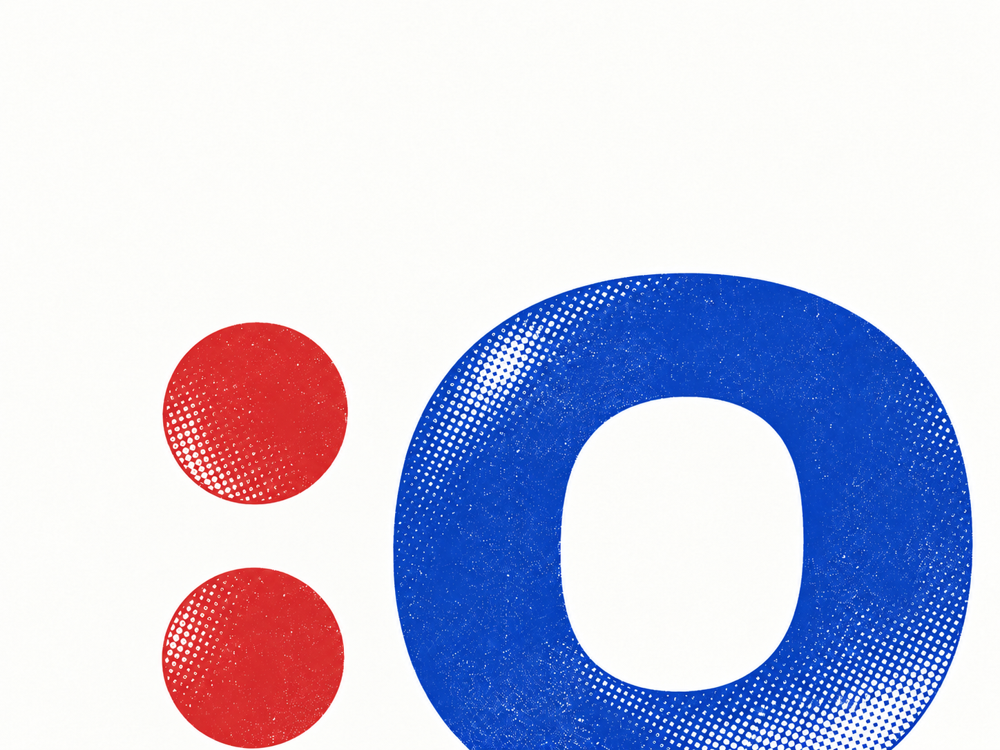

Open source / local harnesses
Your LLM harness,
but collaborative.
A chat for you, your friends,
and your local agents.
surprised-face :o
01
Chat with people.
Share a conversation with a friend. Human messages stay in the shared chat.
02
Ask an agent to act.
Tag your agent in the conversation. Its work and replies appear where everyone can see them.
03
Use your own harness.
Keep your harness, model, and tools. Each person runs their agent with their own token budget.